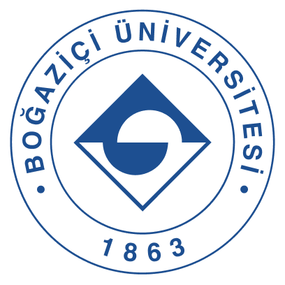

Prof. Dr. Ali EmrePusane

Department of Electrical and Electronics EngineeringBoğaziçi UniversityBebek, İstanbul

Biography
Ali Pusane received his B.Sc. and M.Sc. degrees in Electronics and Communications Engineering from Istanbul Technical University in 1999 and 2002. He then went to the University of Notre Dame, where he earned an M.Sc. in Electrical Engineering (2004), a second M.Sc. in Applied Mathematics (2006), and a Ph.D. in Electrical Engineering (2008). He joined the Department of Electrical and Electronics Engineering at Boğaziçi University in 2009.
Alongside teaching and research, he consults for national and international R&D companies and government organizations. His expertise spans waveform design, physical-layer prototyping, machine-learning-aided signal analysis, signal localization, radar signal processing, and low-complexity embedded designs for FEC encoders and decoders. He leads the Boğaziçi University Signal Analysis Research Group (BUSARG).
A Senior Member of the IEEE, he has reviewed for many IEEE journals and conferences and served as an associate editor for IEEE Transactions on Communications.
Beyond work, he has an unnecessary yet remarkable history with Minecraft, Roblox, Fortnite, and Brawl Stars, and is now a dedicated COD: Mobile player. He is also addicted to Su Doku and Killer Su Doku — which bear an uncanny resemblance to graph-based decoding of linear block codes over an erasure channel. An avid runner, he has finished four marathons, most recently Valencia in 2024.
Education
- 2008Ph.D., Electrical EngineeringUniversity of Notre Dame, Notre Dame, IN, USA · advisor Daniel J. Costello, Jr.
- 2006M.Sc., Applied MathematicsUniversity of Notre Dame, Notre Dame, IN, USA
- 2004M.Sc., Electrical EngineeringUniversity of Notre Dame, Notre Dame, IN, USA
- 2002M.Sc., Electronics & Communications EngineeringIstanbul Technical University, İstanbul
- 1999B.Sc., Electronics & Communications EngineeringIstanbul Technical University, İstanbul
On this site
Research interests and projects
Molecular and visible-light communication, channel coding, physical-layer security, ML-aided signal analysis, and radar.
↗Journal and conference papers
Listed by year, with filters by venue type and topic, and links to DOIs and Google Scholar.
↗Courses
Courses taught at Boğaziçi University and the University of Notre Dame, with student evaluations.
↗Students and alumni
Current PhD and MSc students, and the graduate theses supervised.
↗Academic genealogy
An academic family tree going back through Massey, Fano, Klein, and Euler.
↗Marathons and photography
Marathons in İstanbul, Mersin, Stockholm, and Valencia, and a few photo albums.
Professional activities and honors
Vice-Chair, Marie Skłodowska-Curie Actions Postdoctoral Fellowships (MSCA PF) 2026 call, Horizon Europe
Editorial
- Associate Editor, IEEE Transactions on Communications2020–2024
- Associate Editor, Frontiers in Communications and Networks2020–2025
- Associate Editor, International Journal of Information and Coding Theory (Inderscience)2011–2014
- TPC member for major IEEE conferences; reviewer for the field's major journalsongoing
Research evaluation
- Independent Expert, Rapporteur, and Vice-Chair, EU Horizon 2020 / Horizon Europe programmes2014–present
- Independent Expert, EU Eurostars programme2015–present
- Independent Expert, Innovation Fund Denmark2015–present
- Independent Expert and Rapporteur, EU Seventh Framework Programme (FP7)2013
- Project evaluator for technology parks: İTÜ ARI Teknokent, Boğaziçi University Teknopark, BÜDOTEK Teknopark, Entertech İstanbul Teknokent, and KHAS Teknoparkongoing
University service
- Assistant Chairperson, Department of Electrical and Electronics Engineering, Boğaziçi University2012–13, 2024–26
- Member, Faculty Board, Faculty of Engineering, Boğaziçi University2018–2020
- Member, Faculty Executive Board, Faculty of Engineering, Boğaziçi University2012–2014
Honors
- Excellence in Teaching Award, School of Engineering, Boğaziçi University2010–15, 2019, 2021–25
- Graduate Fellowship, Center for Applied Mathematics, University of Notre Dame2004, 2006–07
- Werner von Siemens Excellence Award, Istanbul Technical University2002
- Best Student Paper Award, 10th IEEE Signal Processing and Communication Applications Conference2002